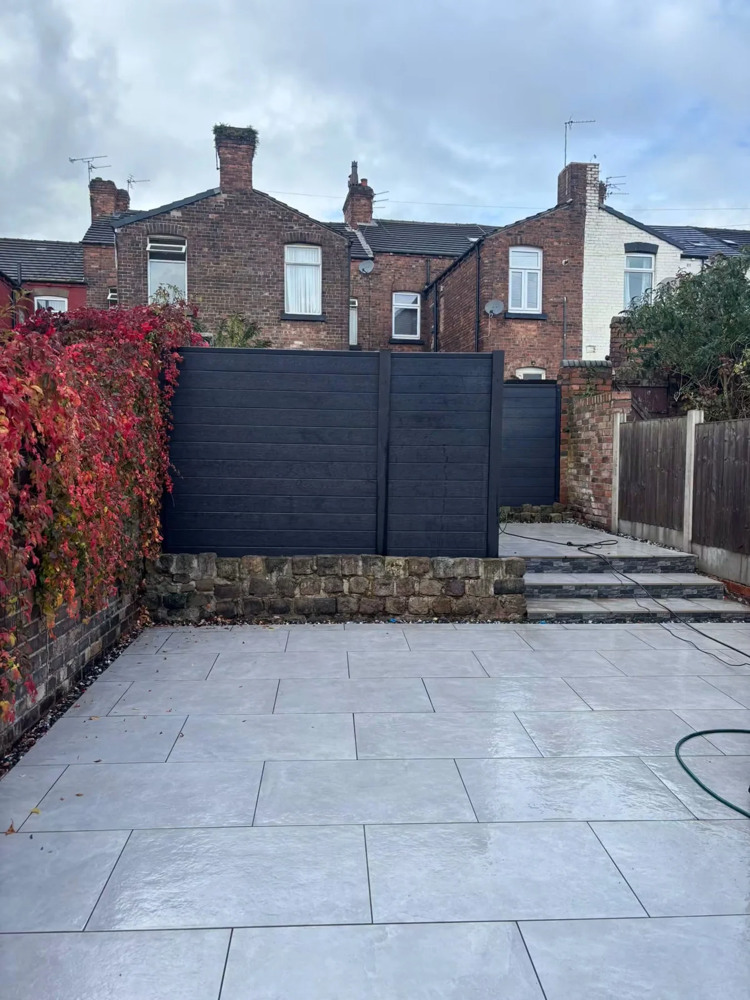

JLA LANDSCAPES · NEWTON-LE-WILLOWS
Define the space.
Finish the garden.
Fencing and timber details for your Newton-le-Willows garden.
Fencing
JLA’s project photographs show timber boundaries, gates and dark garden screening. Send photographs of the existing boundary, approximate lengths and any access details with your enquiry.
Discuss your project →JLA PROJECT PORTFOLIO
A closer look.
Tap a photograph for the complete view.
JLA LANDSCAPES · NEWTON-LE-WILLOWS
Ready for a
fresh outlook?
Talk to JLA about your next garden, driveway or fencing project.